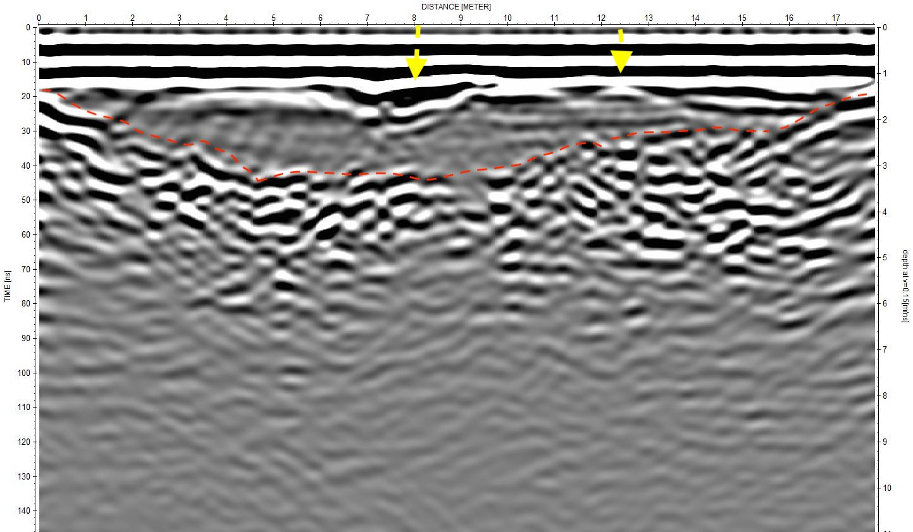

General info about the Skull Cave
Skull Cave (entrance, 41.7314 N, 121.5107 W) is a multilevel segment of a 36 ± 16 ka 186 16 km-long lava tube system that originates from Modoc crater [geologic unit bmc in Donnelly-187 Nolan and Champion, 1987; Donnelly-Nolan, 2010] . There are two 188 principal levels in Skull Cave [Waters et al., 1990] . The cave entrance is the western 189 end of the larger, upper level. This opening is on the eastern end of a collapse trench about 137 190 m long. The entrance offers a three-dimensional view of a blocky surface flow, one of the 191 largest in LBNM. Skull Cave’s lower level, accessed by a pit connecting the levels, extends 192 westward beneath the upper level. Several rooms on the lower level are floored by ice [Waters et 193 al., 1990]. The earliest record of a visit to Skull Cave was in 1892, by E. L, Hopkins and this 194 cave was named by him after a large accumulation of bones, including those of two humans, 195 found at the bottom of the pit [Larson and Larson, 1990]. Bellow figure shows map of GPR and LiDAR surveys of the Skull Cave at LBNM. Green polygons represent terrestrial LiDAR scan (TLS) coverage of the tubes’ interiors. For interactive map view go to the
map tab on the webpage.
-
line 1 (link to download the data)

-
-

-
line 74 (link to download the data)

-

-

{kind=link}